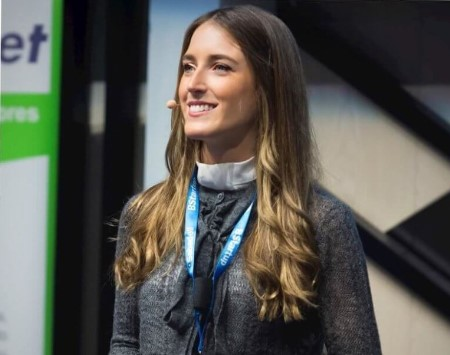
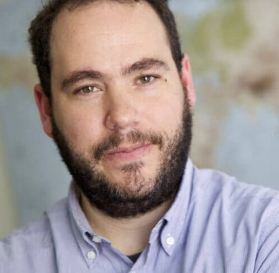
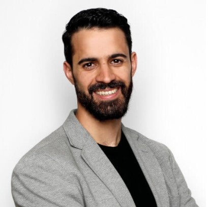
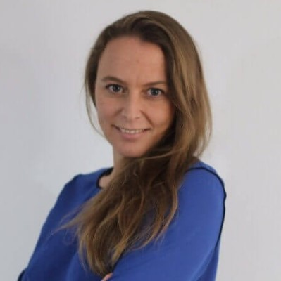
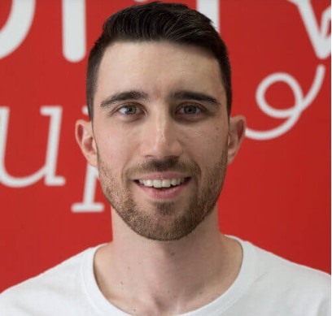
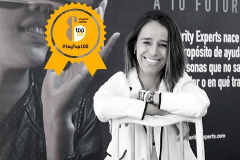
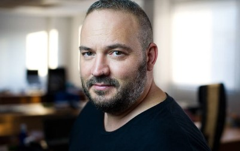

Andrea Barber es CEO de Reated Power, una empresa tecnológica cuyo software permite que realizar diseños de plantas fotovoltaicas (energía solar) a gran escala. El objetivo de su empresa es respirar un airee más limpio, disminuir el padecimiento de enfermedades o luchar contra el cambio climático son algunas de las acciones que persiguen.

Javier de la Torre es fundador y CSO de CARTO, una empresa que se basa en 3 pilares o, mejor dicho, 3 softwares: builder, engine y data observatory. Pero ¿qué tienen de particular estos 3 elementos? CARTO a través de ello ofrece a sus clientes una serie de herramientas que ligan datos internos de la empresa con la geolocalización.

Rafael Ferrer es CEO y cofundador de Neki, una startup aragonesa que ha creado el GPS perfecto para las personas mayores y niños. Para ello, y a la vez que realizaba un programa de emprendimiento, decidió crear una start-up donde producir hardware que permitiera tener a los niños localizados mediante una pulsera conectada al teléfono móvil de los padres.

María López creó Bitbrain, una empresa especializada en neurotecnología que nace como spin-off de un equipo de investigación de la Universidad de Zaragoza. También cuenta con biosensores, amplificadores de bioseñales, eye tracking, sistemas wearables… Un amplio abanico de ítems que ofrecen lo último en tecnología para el ser humano.
Verónica Pascual es la CEO de ASTI, un grupo empresarial basado en ingeniería robótica móvil que estudia, diseña y fabrica soluciones de intralogística automatizada. ASTI destaca por el movimiento de materiales y productos dentro de las industrias mediante vehículos de guiado automatizado: AGVs (Automated Guided Vehicles).

Jorge Dobón es el CEO de Demium Startups, una incubadora de empresas que rompe con los modelos tradicionales. En esta empresa crean startups desde cero, cuando no existe la idea ni tampoco el equipo. Demium Startups selecciona el mejor talento para generar equipos de trabajo que puedan atacar distintas oportunidades de negocio.

Elena Ibañez, ella es CEO y fundadora de Singularity Experts, la plataforma focalizada en el empleo y las personas. Su empresa se centra en aquellos jóvenes y profesionales que no tienen claro su futuro y están confundidos con la velocidad de la tecnología y automatización de la educación.
Carlota Pi, cofundadora y executive president de Holaluz, una corporación que apuesta por la energía verde. Se trata de la empresa que ofrece energía de origen 100% renovable. ¿Cómo han empezado a hacerlo? Han creado una tarifa plana de energía renovable.
Alicia Asín, confundadora y CEO de Libelium, es toda una figura referente del llamado IoT (Internet of The Things) o en versión castellana “el internet de las cosas”. En Libelium han creado un ecosistema para que las personas y empresas puedan utilizar IoT en cualquier parte del mundo.
